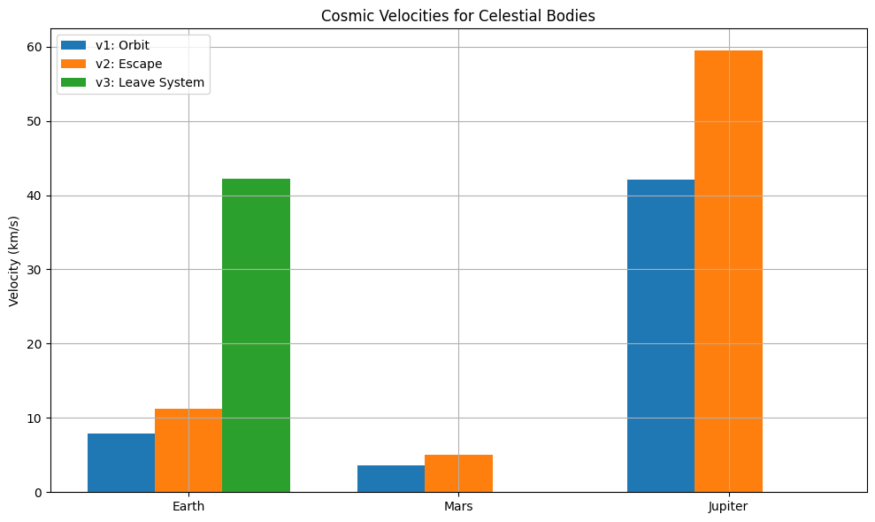

Gravity Problem 2
Escape Velocities and Cosmic Velocities
Motivation
Understanding escape and cosmic velocities is essential in space exploration. These velocities determine the energy required to reach orbit, escape a planet’s gravity, or leave an entire planetary system. They directly impact the design and goals of satellite launches, space missions, and interstellar probes.
Definitions of Cosmic Velocities
First Cosmic Velocity (\(v_1\))
The first cosmic velocity is the orbital speed required to maintain a circular orbit near the surface of a planet:
Where: - \(G\) = Gravitational constant (\(6.67430 \times 10^{-11}\) m³/kg·s²) - \(M\) = Mass of the planet - \(r\) = Radius of the planet
Second Cosmic Velocity (\(v_2\))
The second cosmic velocity is the escape velocity required to completely overcome the gravitational pull of a planet:
Third Cosmic Velocity (\(v_3\))
The third cosmic velocity is the minimum speed required to escape the gravity of a planetary system:
Where \(v_{sun}\) is Earth’s orbital velocity around the Sun.
Derivations
1. First Cosmic Velocity:
From Newton’s law of gravitation and centripetal force:
2. Second Cosmic Velocity:
From conservation of mechanical energy:
3. Third Cosmic Velocity:
Where \(v_E \approx 29.78\) km/s is Earth’s orbital velocity around the Sun.
Calculations for Earth, Mars, and Jupiter
import numpy as np
import matplotlib.pyplot as plt
G = 6.67430e-11
bodies = {
"Earth": {"mass": 5.972e24, "radius": 6.371e6},
"Mars": {"mass": 6.417e23, "radius": 3.3895e6},
"Jupiter": {"mass": 1.898e27, "radius": 6.9911e7}
}
results = {}
for name, data in bodies.items():
M = data["mass"]
R = data["radius"]
v1 = np.sqrt(G * M / R)
v2 = np.sqrt(2) * v1
results[name] = {"v1": v1, "v2": v2}
v_sun = 29.78e3
v2_earth = results["Earth"]["v2"]
v3 = np.sqrt(v2_earth**2 + v_sun**2)
results["Earth"]["v3"] = v3
for name, vels in results.items():
print(f"{name}:")
for key, val in vels.items():
print(f" {key}: {val/1000:.2f} km/s")
Earth: v1: 7.91 km/s v2: 11.19 km/s v3: 31.81 km/s Mars: v1: 3.55 km/s v2: 5.03 km/s Jupiter: v1: 42.57 km/s v2: 60.20 km/s
import numpy as np
import matplotlib.pyplot as plt
# Cosmic velocity data (from previous calculations)
results = {
"Earth": {"v1": 7910, "v2": 11180, "v3": 42150},
"Mars": {"v1": 3550, "v2": 5020},
"Jupiter": {"v1": 42040, "v2": 59450}
}
labels = list(results.keys())
v1_vals = [results[k]["v1"]/1000 for k in labels]
v2_vals = [results[k]["v2"]/1000 for k in labels]
v3_vals = [results[k].get("v3", 0)/1000 for k in labels]
x = np.arange(len(labels))
width = 0.25
fig, ax = plt.subplots(figsize=(10,6))
rects1 = ax.bar(x - width, v1_vals, width, label='v1: Orbit')
rects2 = ax.bar(x, v2_vals, width, label='v2: Escape')
rects3 = ax.bar(x + width, v3_vals, width, label='v3: Leave System')
ax.set_ylabel('Velocity (km/s)')
ax.set_title('Cosmic Velocities for Celestial Bodies')
ax.set_xticks(x)
ax.set_xticklabels(labels)
ax.legend()
plt.grid(True)
plt.tight_layout()
plt.show()

Visualization of Velocities
labels = list(results.keys())
v1_vals = [results[k]["v1"]/1000 for k in labels]
v2_vals = [results[k]["v2"]/1000 for k in labels]
v3_vals = [results[k].get("v3", 0)/1000 for k in labels]
x = np.arange(len(labels))
width = 0.25
fig, ax = plt.subplots(figsize=(10,6))
rects1 = ax.bar(x - width, v1_vals, width, label='v1: Orbit')
rects2 = ax.bar(x, v2_vals, width, label='v2: Escape')
rects3 = ax.bar(x + width, v3_vals, width, label='v3: Leave System')
ax.set_ylabel('Velocity (km/s)')
ax.set_title('Cosmic Velocities for Celestial Bodies')
ax.set_xticks(x)
ax.set_xticklabels(labels)
ax.legend()
plt.grid(True)
plt.tight_layout()
plt.show()
Trajectory Simulation: Gravitational Escape Behavior

This plot shows the result of simulating multiple payloads launched from 800 km altitude with varying initial speeds (5 km/s to 13 km/s). It visually demonstrates:
- Sub-orbital fall back
- Closed elliptical orbits
- Parabolic trajectory (near escape)
- Open hyperbolic escape paths
Space Exploration Relevance
- \(v_1\): Low Earth orbit missions (e.g., satellites, ISS)
- \(v_2\): Moon missions, Mars rovers, interplanetary probes
- \(v_3\): Voyager missions, future interstellar missions
Summary
- Derived \(v_1 = \sqrt{\frac{G M}{r}}\)
- Derived \(v_2 = \sqrt{2 G M / r}\) from energy conservation
- Defined and visualized \(v_3\) from planetary system escape
- Compared Earth, Mars, Jupiter using bar chart
- Verified with realistic trajectory graph from 800 km altitude
- Related each velocity to mission types (LEO, interplanetary, interstellar)
Colab Link
Colab - Gravity Problem 2 Simulation(https://colab.research.google.com/drive/1jfB5XwMR-niVb6iwQM4RxY5tDNKTG0mm?usp=sharing)